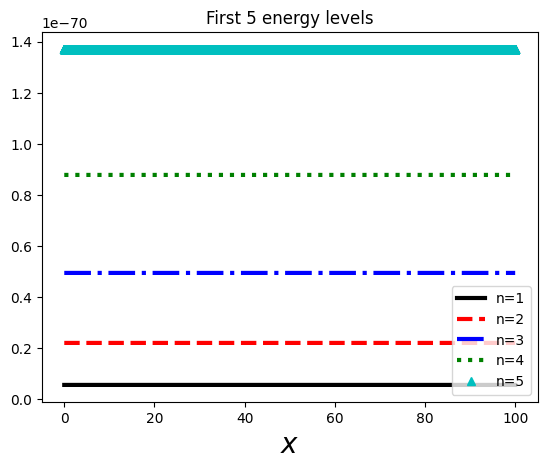
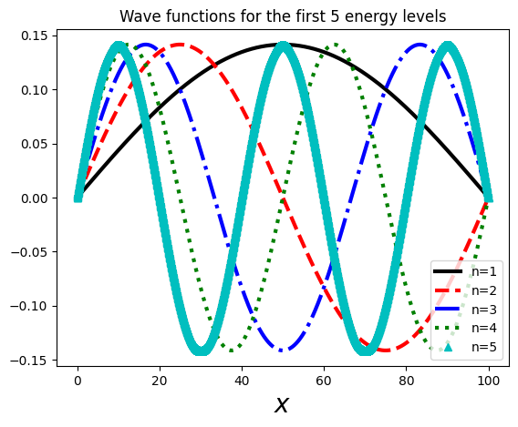

Quantum Physics - Infinite Well 1d
Lately I have had some extra quiet time due to medical conditions, and I took on some quantum mechanics. I followed the MIT 8.04 course on OCW, but I’m also following the great ‘Introduction to Quantum Mechanics’ book by David Griffiths and Darrell Schroeter.
That made me rediscover my local library, and also too ‘Numerical Methods in Physycs with Python’ by Alex Gerzerlis and that combination gives this series of articles on both, python and physics with some summaries, exercises and musings on the subject.
This is not meant to be a complete, or even incomplete introduction to quantum mechanics, it’s just a set of exercises and notes for myself, though you might find helpful also if you are following a quantum mechanics course either on-site, online, or just reading a book.
Single particle inside an infinite square potential well (1 Dimension)
We have a potential of the type:
$$ V(x) = \begin{cases} 0, & \text{if}\ 0 \le x \le L, \\ \infty, & \text{otherwise} \ \end{cases} $$
Outside the well, it’s clear that the particle can’t exist, as the potential is infinite, so we can say that:
$$\psi(x) = 0$$
Inside the well
Inside the well, we have $$V=0$$, so the time independent Schrödinger equation is:
$$ -\frac{\hbar}{2m}\frac{d^2\psi}{dx^2} = E\psi $$
This can be rewritten as a simple harmonic oscillator:
$$ \frac{d^2\psi}{dx^2}=k^2\psi, \hspace{1cm} \text{where} \hspace{0.5cm} k \equiv \frac{\sqrt{2mE}}{\hbar} $$
This has the canonical solution: $$ \psi{x} = A\sin{kx} + B\cos{kx} $$
Now, as we know that $\psi(0) = \psi(L) = 0$, then we can get $A$ and $B$ from the boundary conditions:
$$ \psi(0) = 0 = A\sin{0} + B\cos(0) = B => B = 0 $$ So we have only the sinus left: $$ \psi(x) = A\sin{kx} $$ And on the other boundary: $$ \psi(L) = 0 = A\sin{kL} => \begin{cases} A = 0 & \text{but this means a trivial non-normalizable state} \\ kL = 0, \pm\pi, \pm2\pi, … & \text{where }k=0\text{is also no good, and negative solutions add nothing}\ \end{cases} $$
So we end up with: $$ k_n=\frac{n\pi}{L}, \text{ with } n=1,2,3,… $$
Now, to find out $A$, we can normalize it ($\int_{-\infty}^{\infty}|\psi(x)|^2dx$=1): $$ \int_{0}^{L}|A\sin{\frac{n\pi x}{L}}|^2dx = A^2\int_{0}^{L}sin^2{\frac{n\pi x}{L}}dx $$ Using $sin^2{x} = (\frac{1}{2} - \frac{cos(x)}{2})$ we can simplify the integral and we end up with: $$ A = \pm\sqrt{\frac{2}{L}} $$
But as the phase of $A$ carries no physical significance, we can pick the easiest to deal with, that’s the positive solution. So the final wave function is: $$ \psi(x) = \sqrt{\frac{2}{L}}\sin{\frac{n\pi}{L}x} \hspace{0.5cm}\text{where } n=1,2,3,… $$
We also get that the energy is: $$ E_n=\frac{\hbar^2k_n^2}{2m}=\frac{n^2\pi^2\hbar^2}{2mL^2} $$
And as you can see, these are discrete states, that we can plot:

And the 5 wave functions associated with them:

You can find the code for this graphs here.